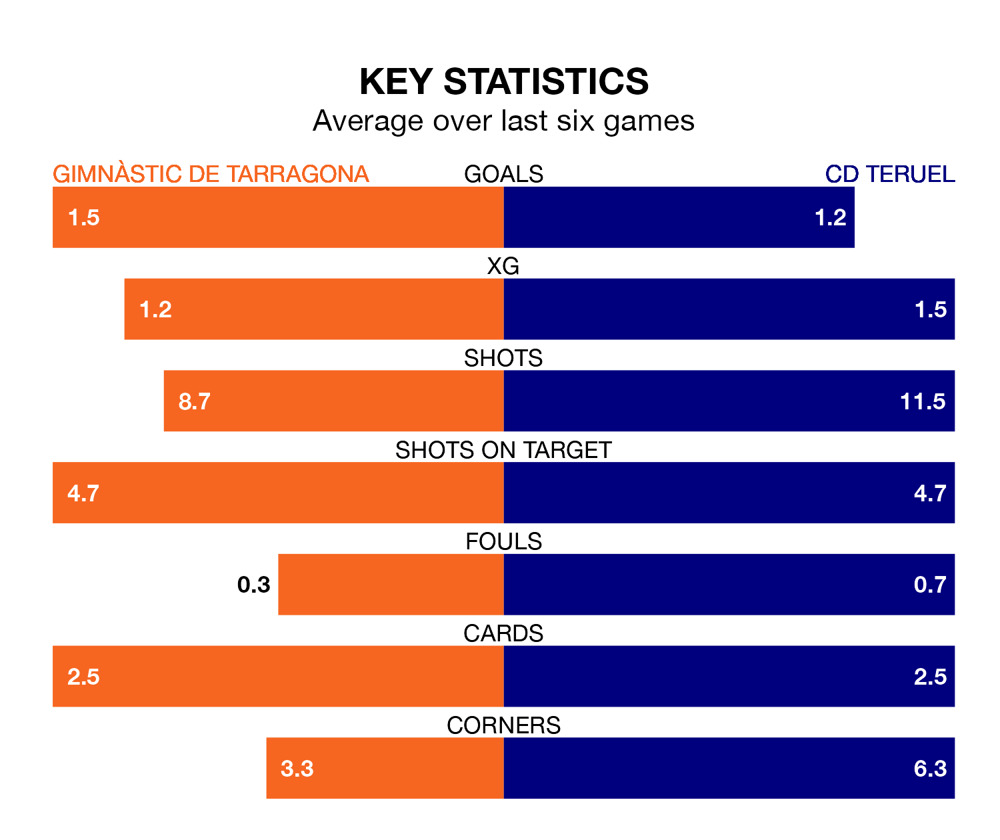

Mid-season relegation candidates CD Teruel face a challenge away against high-flying Gimnàstic de Tarragona at Nou Estadi de Tarragona on Sunday.
CD Teruel are rooted to the bottom of the Primera Division RFEF Group 1 table, and have picked up just one win and 15 draws in their 24 games to date.
Gimnàstic de Tarragona, meanwhile, are top of the standings with 46 points, having won 13 and drawn seven.
With 14 goals in 24 games so far this season, Teruel are the league's lowest scorers with 0.6 goals per game. And they are conceding at an average rate, letting in 24 goals at a rate of 1.0 per game.
Gimnàstic de Tarragona, meanwhile, are above average scorers, with 1.2 goals per game, compared to a league average of 1.0. They have conceded 0.6 goals per game.
In Alberto Varó Lara, the home side can rely on one of the league's safest pair of hands. He has kept 12 clean sheets in his 20 appearances this season, and only one other 'keeper – Cultural y Deportiva Leonesa's Miguel Bañuz Antón – has been able to prevent the opposition scoring on more occasions in Primera Division RFEF Group 1.
In the visitors' net, Taliby Konate has 10 clean sheets in 23 games. He has conceded a goal every 97 minutes, 60% more often than the 158 minutes between goals for Varó Lara.
Gimnàstic de Tarragona are in good form in Primera Division RFEF Group 1, with four wins and two draws from their last six games.
With a win and four draws over that period, Teruel's form is much worse – they have taken seven points from 18, compared to Gimnàstic de Tarragona's 14.
Gimnàstic de Tarragona's last match was on Sunday, a 1-1 draw against Sestao River Club, with Óscar Sanz Naval getting the goal for Gimnàstic de Tarragona.
Teruel lost 2-1 against CD Lugo last time out, on February 17, with Francisco Carmona García on the scoresheet.
Updated: 10:08 (UTC), 23/02/24